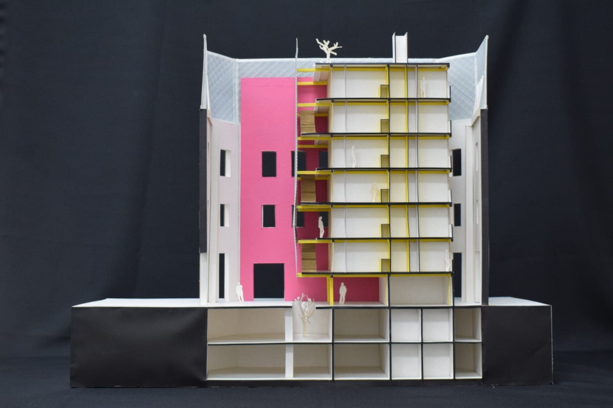
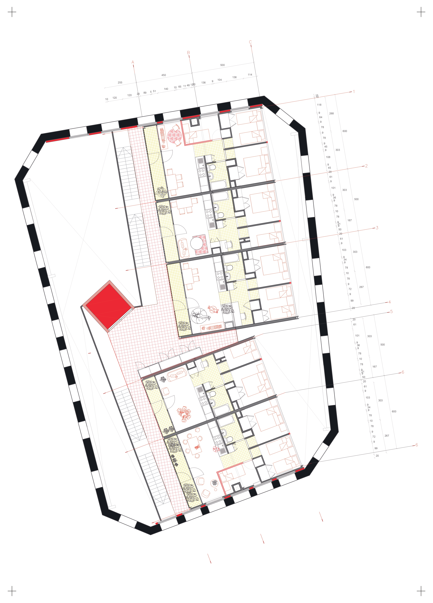

Scapes of transformation
The territory will change to adapt to conditions.
Statement
Urban landscapes are constantly changing. The city we live in today is not the same as it was 50 years ago, or even 25 years ago. We are at a crucial moment, where we can look at the recent past and project the near future. Non-desirable scapes seeks to understand how our cities have evolved and where they are headed.
Since 2000, the metropolitan region has undergone significant transformations. Initiatives such as metro expansion, highways, commerce, work, and housing have radically changed the urban landscape. These projects have aimed to improve quality of life, profitability, and city development. However, these transformations do not occur in a vacuum. They are intrinsically linked to global and local contexts.
The materials used in the construction of our cities come from various parts of the world, creating new landscapes of extraction and transformation. Gravel extraction pits and seaports loaded with materials are landscapes that reflect urban demand and our dependence on external resources. These landscapes compel us to consider the environmental and social implications of our development decisions. The cities of the future are projected to be sustainable, green, and smart. However, it is crucial to question how sustainable these initiatives truly are and to assess their global environmental impact.
In Santiago, Chile, the transformations of the last 25 years have been profound. The city has experienced significant changes in mobility, housing, and the emergence of new infrastructures. But it has also faced challenges such as the loss of natural landscapes and evident glacier melting. These visible transformations allow us to foresee what the landscape will be like in 2050 and what types of landscapes we desire and the landscapes that will be and those we don't desire
The aim of this reflection is to unveil what the landscape of 2050 will be like, which landscapes we desire and which we do not want. It is crucial to understand how these landscapes are built, the materials used, and their origins. By doing so, we can identify the landscapes of transformation linked to global and local contexts. How will our current urban decisions influence the future of our cities? What implications will these transformations have on the balance with nature? Are we really building a sustainable future or simply mitigating the negative effects of our unchecked urban growth? Can we create cities that are not only technologically advanced but also truly sustainable and equitable?
Other nonscape ideas
01/ Collage Rural Urban
-
It is well know theoricatical, yet practical dispute amid to determine the difference and the boundaries between rural and the urban areas.
Alongside, it has been enacted conceptuals frameworks to interwined both the rural and urban in a over populated and urbanized settings.
The nuture idea of an urban world as a system that contents the rural area as a key featured, yet functional to cities and metropolitan ideas,
it is an example of where we are moving out as a society. Nonettheless , it seems that is closer to a settings that we are not sure if we would
like to be part of this. Taste, often we follow up as fuck, others we intend to reach out in our mindsets rather that action. Saying this,
it is more likely, in a non desirable settings, that we would triggered for aesthetics and formal implication rather than accomplish a political
technical resonse to this issue. How can we imagine urban facilities and infraestructure in rural settings? It is a misunderstanding or maybe we would like
this kind of eclectical urban-rural landscape? This image seek this aesthetical yet political and technical implications of wich are the likely futures
that we are building neither desirable or non desirable styling.
02/ Care at the city
-
Valparaíso, a coastal city in the fifth region of Chile, was a crucial port in 1900, marking an early stage of globalization. The historic center, known as "El Plan,"
houses markets, facilities, and the transportation system. Today, many historic buildings are in disrepair and abandoned, primarily due to fires caused by the age of their materials.
The city has a unique topography: the port and center are in flat areas, while the population is concentrated in over 40 surrounding hills with old buildings and informal settlements,
vulnerable to fires. The project proposes repurposing the shells of abandoned buildings for affordable rental housing, managed by government institutions.
The income would be used for the city's heritage conservation.

